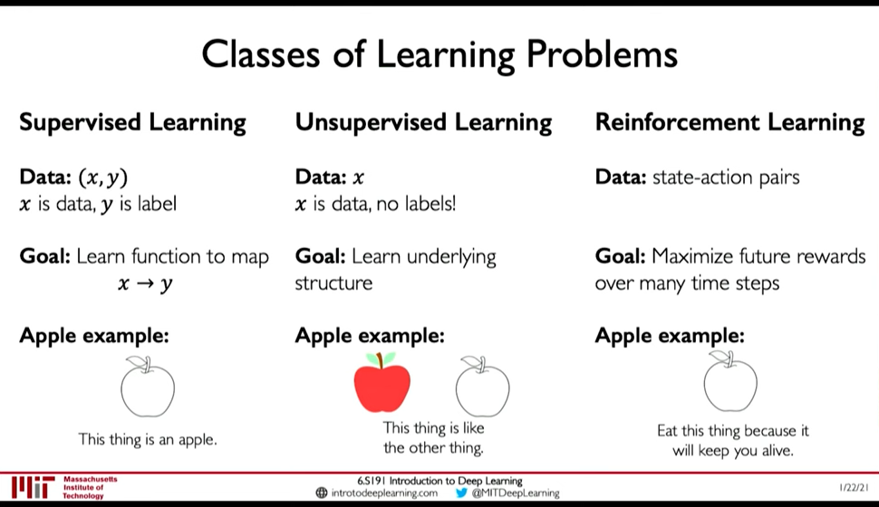
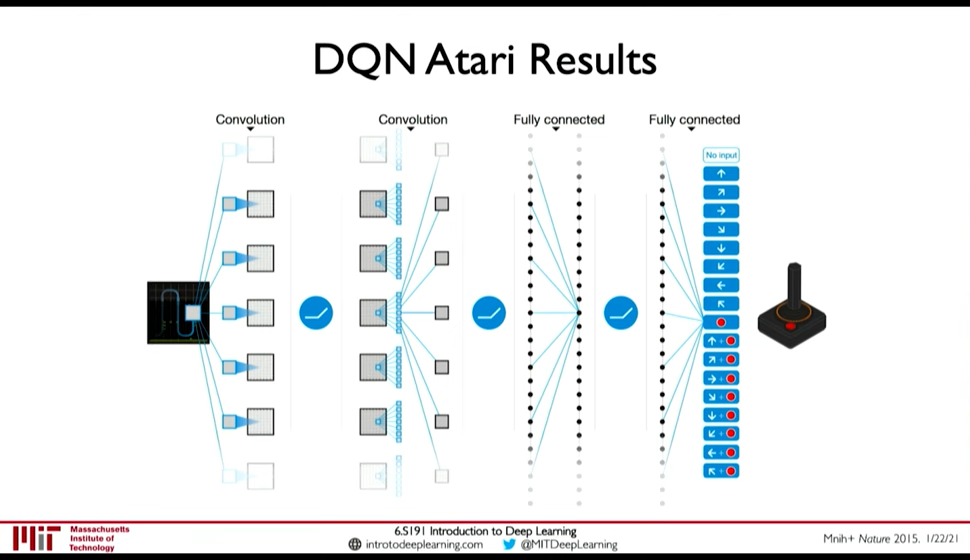

Deep Reinforcement Learning
Table of Contents
Lecture 5: Deep Reinforcement Learning: In which we learn how we can marry reinforcement learning with recent advancements in deep learning.
Paradigm till now was that we train on fixed dataset, but in RL our algorithm is placed in a dynamic environment and the "dataset" is not fixed.

Figure 1: Classes of Learning Problems
1. Introduction
0:07:49
- Agent: The one who takes actions
- Environment: the world in which the agent takes actions
- Action: a move the agent can make in the environment
- Action Space: the set of possible actions
- Observations/State: a situation the agent can observe in the environment
- Reward: feedback taht measures the success or failure of the agent's action
- 0:10:26 Total Reward i.e. Return: \(R_t = \sum_{i=t}^{\inf} r_i\)
- 0:12:14 Total Discounted Reward: \(R_t = \sum_{i=0}^{\inf} \gamma^i r_{i+t}\)
- Q-Function: Expected return from taking an action \(a_t\) in state \(s_t\) \(Q(s_t, a_t) = E[R_t|s_t,a_t]\)
Goal of RL is to find a policy \(\pi(s)\) that takes the best action to take at state \(s_t\).
2. Learning Algorithms
0:17:54
- Value Learning: Find the Q-Function \(a = \arg \max_a Q(s,a)\)
- Policy Learing: Find the policy \(a \sim \pi(s)\)
3. Deep Q Networks (DQN)
0:24:56 Two ways to model the Q-Function:
- Input: Action + State; Output: Expected Return
- Input: State ; Outptu: Expected Return for all action
Loss function is Q-Loss \(L = E[|| ( r + \gamma \max_{a'} Q(s', a') ) - Q(s,a) ||^2]\)

Figure 2: DQN Atari Network
0:32:58 Downsides:
- Complexity: Cannot handle continuous action spaces, or when action space is discrete but large
- Flexibility: Policy is deterministic so Q-Learning cannot learn stochastic policies
4. Policy Gradient Methods
0:35:08
- Sometimes optimal policy is stochastic
- Policy Gradient methods can handle continuous action space (e.g. network can output a mean \(\mu\) and variance \(\sigma^2\))
0:43:49
Loss function is \(L = -\log P (a_t | s_t) R_t\)
The basic Training Algorithm for Reinforcement Learning is
- Initialize the agent
- Run a policy until termination.
- Record all states, actions, rewards
- Decrease probability of actions that resulted in low reward
- Increase probability of actions that resulted in high reward
Step 4 and 5 are the curx of RL algorithm. But step 2 is also difficult unless there is a simulation. Because in real life we cannot run experiments until failure.

Figure 3: Car Runs off the Cliff before it learns that's bad (0:48:24)
5. Applications
0:53:32
- AlphaGo: Go
- AlphaZero: Go, Chess, Shogi